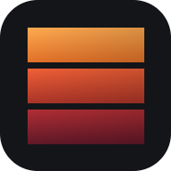

С чего начать
- Добавь фото в библиотеку слева
- Выбери их кликом — по порядку
- Нажми шаблон сверху: «Кино-карусель», «Сплит на 2»…
- Двигай кадр мышью/пальцем, колесо или щипок — зум
- «Экспорт» — готовые слайды по порядку

CropperЕсли не открывается — разреши Cropper доступ в «Частные сети» в окне брандмауэра Windows. Компьютер должен быть включён, а приложение запущено.
Вне дома — онлайн-версия, работает без компьютера и без интернета после первого открытия. Фото обрабатываются на телефоне и никуда не загружаются:
Удерживай палец на картинке → «Сохранить в Фото». Или используй кнопки ниже.